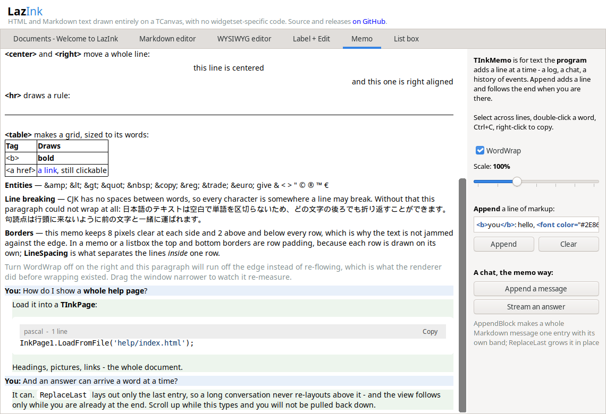

TInkPage at
a folder of HTML and it walks the links, finds, selects, remembers
where Back goes — the manual of a real program already ships
this way.What a canvas-drawn renderer is for — written as one readable page that is also a test document.
canvas-drawn 0BSD no JavaScript no browser engine
LazInk draws formatted text on a plain TCanvas: labels,
memos, list boxes, a page viewer and an editor, reading HTML or
Markdown through one renderer. No WebView, no SynEdit, no GPL
code — a Lazarus package that weighs what a package should. Inline
it handles bold, italics, underline,
strikethrough, highlighted phrases, H2O
and E=mc2,
links,
code spans, the Ctrl+F kind of key,
and the small print.
bugs/.On this page: 1 what you could build, 2 the engine, 3 a chat window, 4 a log console, 5 tables, 6 single lines, 7 lists, 8 folds and fine print — numbered so a difference between the two halves can be named by its section, and the links jump, as they would in a help viewer.
Anywhere a Lazarus program shows words that deserve better than a
TLabel, there is a control here for it:
TInkPage at
a folder of HTML and it walks the links, finds, selects, remembers
where Back goes — the manual of a real program already ships
this way.<details> for the long tail.TInkMemo appends
each message as a little document on its own band — a growing
answer re-lays only its own entry.SetInnerHTML
changes one element by id without rebuilding the page; the host hears
clicks through OnElementClick and does what script
would.
<img> scaled by its width
attribute.Since October 2026 every page stands on a real document tree: a browser’s own tag-soup parsing, the full CSS cascade, and layout from the computed styles. Flex puts cards in a row and shares the width:
calc(), @media,
light-dark() — held against
getComputedStyle.The measure is HTML and CSS as people actually write them — an old help file, a Markdown README, a saved article should come out the way a browser draws them.
— the roadmap, on where this is going
<video>, embedded frames. The page shows its
<noscript> and the fallback inside an
<iframe>.These bubbles are divs with a radius and a tint —
the real thing is three calls on a TInkMemo
(AppendBlock, ReplaceLast,
EntryAt):
Memo.ReplaceLast(SoFar); // one entry re-laidTInkEdit.PasswordChar — with per-character colors
when it shows, so a token’s checksum can glow red.One pre with colored spans — in a program this is
a TInkListBox arriving line by line:
09:14:02.114 started worker alpha 09:14:02.882 started worker bravo 09:14:04.010 halted worker charlie — retrying 09:14:05.550 error worker bravo — disk full 09:14:06.117 done worker alpha, 1,284 rows
Automatic column widths from the words, cells that span, columns that align:
| Control | Reads | Lines to use it |
|---|---|---|
TInkLabel | a line or a paragraph | 1 |
TInkMemo | log lines, chat entries | 2 |
TInkPage | whole documents | 1 |
TInkRichEdit | Markdown, edited as the thing itself | 3 |
| one renderer behind all of them | — | |
A second table, tighter, with a header that spans rows:
| Format | Where it goes | |
|---|---|---|
| Display | Editing | |
| HTML | every control | as markup |
| Markdown | every control | WYSIWYG, round-trip |
| Plain text | itfPlain | as itself |
A status line that must stay one line ends in an ellipsis, as CSS
asks (nowrap, a clipping overflow,
text-overflow: ellipsis):
And a word too long for any line parts only where
<wbr> allows:
A line-height of 2 opens a paragraph up — airy, the way settings pages like it — and the next one closes down to 1.1:
snug lines pack a sidebar tight without clipping their ascenders or descenders.
text-transform shouts this span, and typography comes out right: café, naïve, ¾ of a pie, 25 °C, x ≠ y, “curly quotes”, an em dash — and a non‑breaking hyphen.
inline code
ComputedStyle and ExplainStyle.A <details> element, opened and shut by its
summary — drawn and handled by LazInk, no script involved.
Folds nest, as a FAQ wants them to.
A fenced block names its language and the small highlighter colors
comments, strings, numbers and keywords — nothing more; a host
with a real highlighter plugs in through OnHighlightCode:
procedure TForm1.FormCreate(Sender: TObject);
begin
// one line is enough
Page.LoadMarkdown('# Hello' + LineEnding + 'It *renders*.');
Page.OnElementClick := @WhatScriptWouldDo; { the host's turn }
end;Written for the LazInk demo’s side-by-side tab — prose first, test document second, and honest about both. Back to the top.